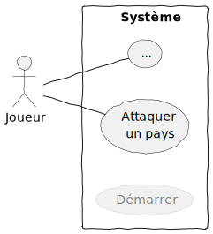

3 Cas d’utilisation
Le chapitre 6 présente les cas d’utilisation. Il s’agit des documents textuels décrivant l’interaction entre un système (logiciel à développer) et un ou plusieurs acteurs (les utilisateurs ou systèmes externes). Le cas d’utilisation décrit plusieurs scénarios, mais en général il y a un scénario principal (« Happy Path ») représentant ce qui se passe lorsqu’il n’y a pas d’anomalie.
La notation UML inclut les diagrammes de cas d’utilisation, qui sont comme une table des matières pour les fonctionnalités d’un système.
Dans LOG210, la théorie sur comment écrire les cas d’utilisation ne fait pas partie du cours; c’est un élément expliqué dans un autre cours (LOG410 Analyse de besoins et spécifications).
3.1 Exemple: jeu de Risk
L’exemple suivant concerne le jeu de Risk.

{kind=link}
Selon « Risk ». 2019. Wikipédia. (accédé le 9 décembre 2019):
L’attaquant jette un à trois dés suivant le nombre de régiments qu’il désire engager (avec un maximum de trois régiments engagés, et en considérant qu’un régiment au moins doit rester libre d’engagements sur le territoire attaquant) et le défenseur deux dés (un s’il n’a plus qu’un régiment). On compare le dé le plus fort de l’attaquant au dé le plus fort du défenseur et le deuxième dé le plus fort de l’attaquant au deuxième dé du défenseur. Chaque fois que le dé du défenseur est supérieur ou égal à celui de l’attaquant, l’attaquant perd un régiment; dans le cas contraire, c’est le défenseur qui en perd un.
3.1.1 Scénario: Attaquer un pays
- Le Joueur attaquant choisit d’attaquer un pays voisin du Joueur défenseur.
- Le Joueur attaquant annonce combien de régiments il va utiliser pour son attaque.
- Le Joueur défenseur annonce combien de régiments il va utiliser pour sa défense.
- Les deux Joueurs jettent le nombre de dés selon leur stratégie choisie aux étapes précédentes.
- Le Système compare les dés et élimine les régiments de l’attaquant ou du défenseur selon les règles et affiche le résultat.
Les Joueurs répètent les étapes 2 à 5 jusqu’à ce que l’attaquant ne puisse plus attaquer ou ne veuille plus attaquer.
3.1.2 Diagramme de cas d’utilisation
La figure 3.1 est un exemple de diagramme de cas d’utilisation.

Notes:
- Un diagramme de cas d’utilisation n’est qu’une sorte de table des matières des fonctionnalités. Le diagramme ne montre qu’une faible partie des détails trouvés dans le texte de chaque cas d’utilisation. Le diagramme ne peut donc remplacer la documentation textuelle.
- Le cas d’utilisation « … » signifie tous les autres cas d’utilisation du jeu, par exemple pour distribuer les régiments à chaque tour, etc.
- Le cas d’utilisation Démarrer n’est pas normalement indiqué dans un diagramme. C’est une astuce pédagogique pour la méthodologie du cours, car il faudra concevoir et coder ce scénario, bien qu’il ne soit pas une fonctionnalité connue par l’utilisateur.